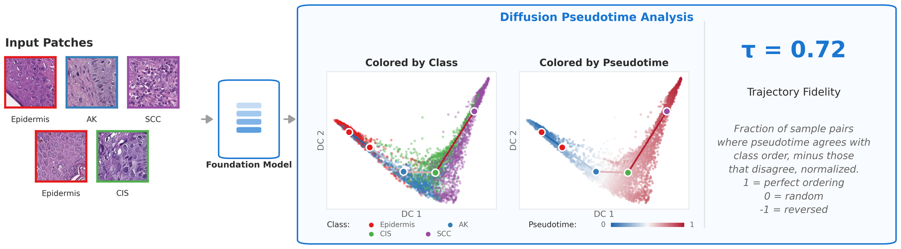
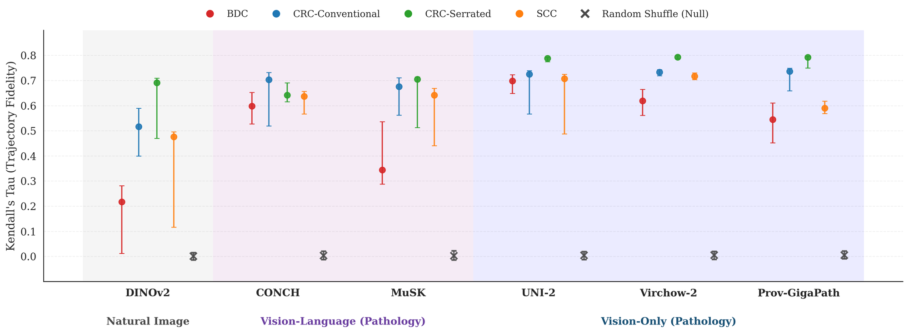
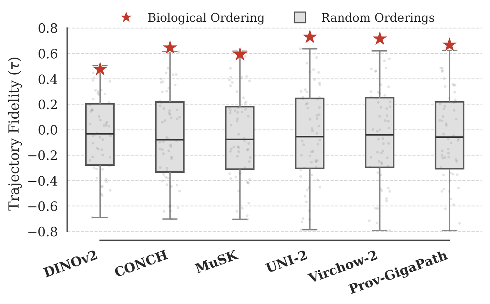
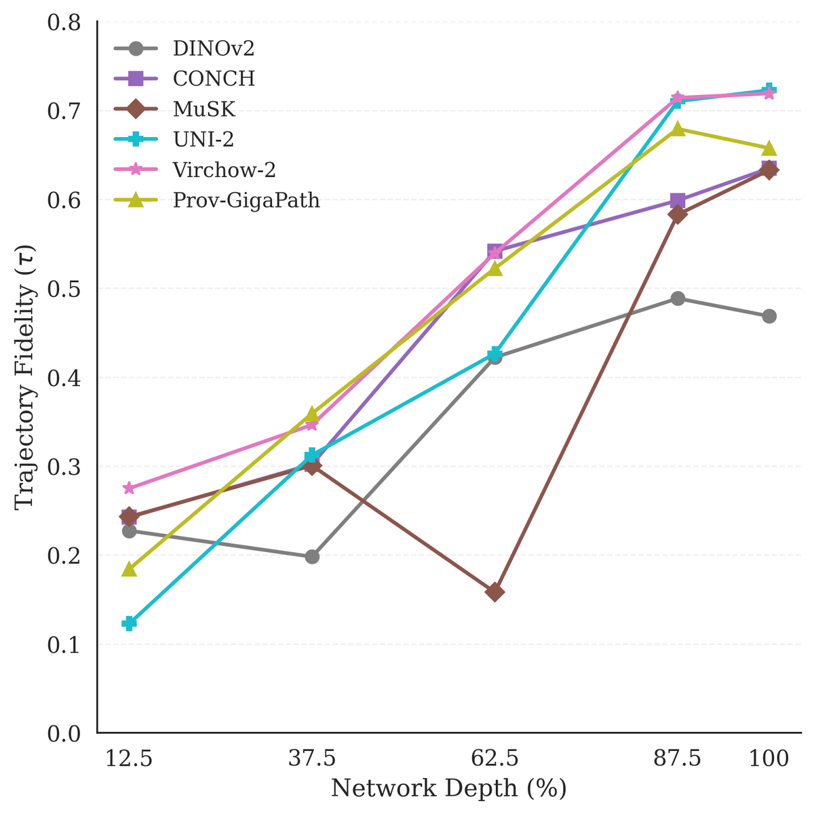
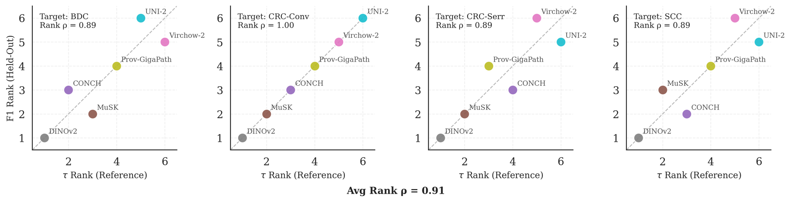
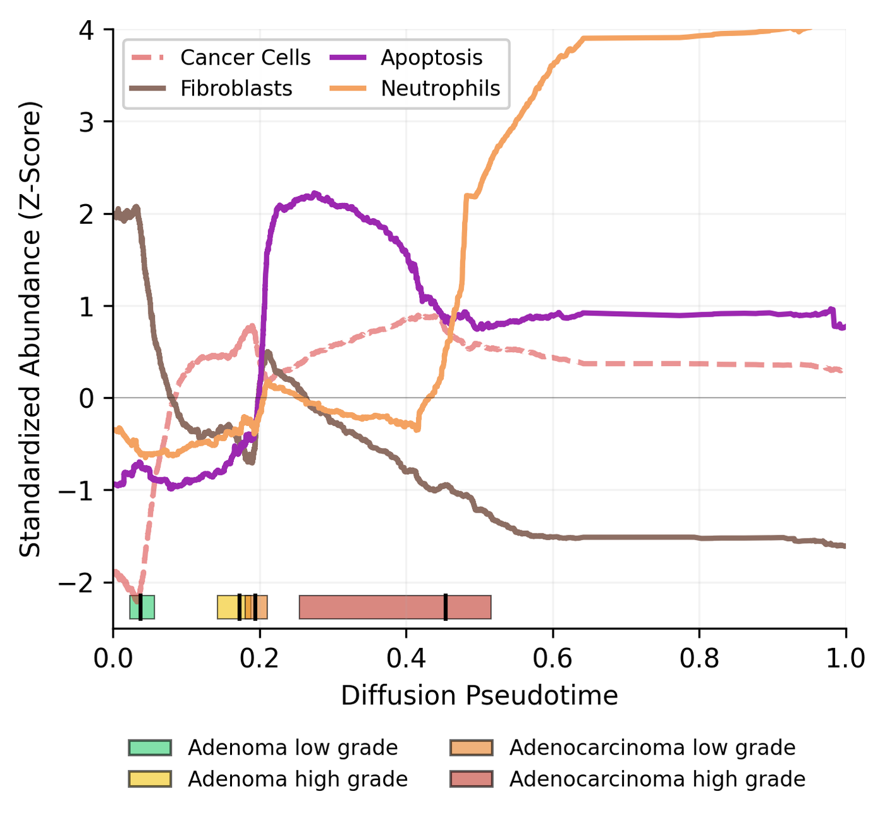
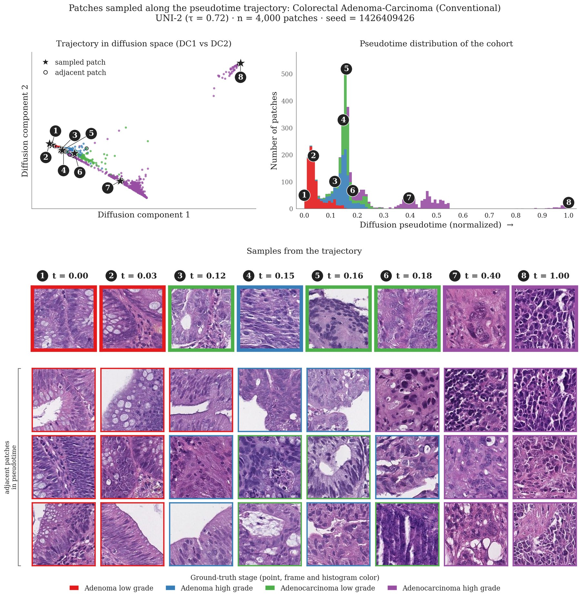

Abstract
Vision foundation models trained on discretely sampled images achieve strong performance on classification benchmarks, yet whether their representations encode the continuous processes underlying their training data remains unclear. This question is especially pertinent in computational pathology, where we posit that models whose latent representations implicitly capture ordinal disease progression may better reflect underlying biology, support more robust generalization, and enable quantitative analyses of features associated with disease transitions. Using diffusion pseudotime, a method developed to infer developmental trajectories from single-cell transcriptomics, we probe whether foundation models organize disease states along coherent progression directions in representation space. Across four cancer progressions and six models, we find that all pathology-specific models recover trajectory orderings significantly exceeding null baselines, with pathology vision-only models achieving the highest average fidelities. Model rankings by trajectory fidelity on reference diseases predict few-shot classification performance on held-out diseases (ρ = 0.91), and exploratory analysis shows cell-type composition varies along inferred trajectories in patterns consistent with known stromal remodeling. Together, these results suggest that vision foundation models can implicitly learn to represent continuous processes from independent static observations, and that trajectory fidelity provides a complementary measure of representation quality beyond downstream performance. While demonstrated in pathology, this framework could be applied to other domains where continuous processes are observed through static snapshots.
Motivation
Vision foundation models for computational pathology (CPath) now achieve state-of-the-art performance across diverse diagnostic tasks, from tumor classification to mutation prediction [1, 2, 3, 4, 5]. These models process hematoxylin and eosin (H&E) stained whole slide images (WSIs) by dividing them into smaller image patches and generating embeddings for each patch. The performance of these embeddings is primarily assessed using discrete classification benchmarks [6, 7, 8].
However, relying exclusively on downstream performance benchmarks provides insufficient understanding of both the ability to generalize in clinical settings and the extent to which foundation model representations encode underlying disease biology. Methods targeting the latter especially have the potential to advance our understanding of connections between histological features and patient outcomes. The importance of understanding foundation model representations is underscored by recent findings highlighting their fragility under distribution shifts and stain variations [9, 10, 11, 12].
Robust pathology foundation models will require representations that capture true biological structure. One natural test of this quality is disease progression: while downstream benchmarks typically assess discrete classification, disease itself progresses continuously across ordinal states.
Here, we introduce a pseudotime-based framework to study the opaque learned representations of CPath foundation models, with the intuition that if diffusion pseudotime (DPT) [13] recovers correct disease progression class ordering from these embeddings, it provides evidence that the representation implicitly encodes progression-relevant structure. Recovering ordinal progression structure is a strictly stronger geometric criterion than achieving class separability, as a representation can cleanly separate labeled classes while arranging them in an order inconsistent with biological progression.
Contributions
- We demonstrate that pathology foundation models implicitly encode disease progression as low-dimensional manifolds, largely recovering temporal class ordering from static snapshots without supervision.
- We find trajectory fidelity correlates with few-shot generalization performance: models preserving progression structure on reference cohorts achieve higher classification task accuracy on held-out diseases (mean ρ = 0.91), offering a potential signal for generalization.
- We provide evidence that the learned representations encode biological processes at sub-class granularity: cell-type composition varies along the inferred disease manifold in patterns consistent with known stromal remodeling, providing opportunities to understand biological changes more finely than discrete progression class labels.
Method
Diffusion pseudotime
Given a set of d-dimensional feature vectors representing biological samples, diffusion pseudotime (DPT) identifies a relative ordering of the samples by computing transition probabilities between nearby points in feature space. Starting from a designated root sample, DPT aggregates these probabilities across random walks of all lengths, ultimately outputting a pseudotime coordinate for each sample that quantifies its progression distance from the root [13].
We adapt this approach to foundation model embeddings representing histopathology patches across disease states. We build a transition matrix by constructing a weighted k-nearest-neighbor graph over patch embeddings using cosine distance. To account for varying sampling densities on the manifold, we employ a locally scaled Gaussian kernel [13] as implemented in Scanpy [14]. In our experiments, we set the root as the medoid of embeddings from the earliest disease class.
Trajectory fidelity
To evaluate the agreement between the inferred diffusion pseudotime (continuous) and ground-truth disease classes (ordinal states), we computed Kendall's Rank Correlation Coefficient (τ) [13, 15]. A value of τ = 1 indicates that the inferred pseudotime strictly preserves the biological order of classes in disease progression, whereas a value of 0 indicates random concordance.
We note that class separability alone does not guarantee high τ. Representations that cluster classes distinctly but arrange them inconsistently with progression direction would yield low τ, whereas orderings that preserve the biological sequence along the embedding manifold would achieve τ → 1.
Disease progression cohorts
We analyzed four biologically grounded cancer progressions using expert-annotated 224 × 224 pixel patches from the SPIDER dataset [16]. SPIDER provides H&E-stained patches at 20× magnification from the HISTAI collection [17], consisting of slides from multiple institutions and digitized using four different scanners. SPIDER was not included in training data for any foundation models we evaluate.
- Skin Squamous Cell Carcinoma (SCC)
- Epidermis → Actinic keratosis → SCC in situ → Invasive SCC This trajectory models classic UV-induced progression from precursor lesions to invasive malignancy [18].
- Colorectal Conventional Pathway
- Adenoma (low grade) → Adenoma (high grade) → Adenocarcinoma (low grade) → Adenocarcinoma (high grade) This follows the canonical adenoma-carcinoma sequence, representing gradual accumulation of genetic alterations from benign neoplasia to undifferentiated carcinoma [19].
- Colorectal Serrated Pathway
- Hyperplastic polyp → Sessile serrated lesion (SSL) → Adenocarcinoma (high grade) This captures the alternative serrated pathway, distinct from the conventional sequence [20].
- Breast Ductal Carcinoma (BDC)
- DCIS (low-grade) → DCIS (high-grade) → Invasive carcinoma While direct temporal evolution from low- to high-grade DCIS is one plausible trajectory, these grades can also arise via independent evolutionary pathways [21], and thus, at a minimum, this sequence reflects a progression of histological severity.
Foundation models
We evaluated six models spanning distinct pretraining paradigms, including one natural image baseline, DINOv2 [22], and five CPath models. These comprise two methodological families: vision-only models trained with self-supervised learning, and vision-language models (VLMs) trained with vision-text contrastive learning. The vision-only CPath models are UNI-2 [1], Virchow-2 [2], and Prov-GigaPath [3]. For vision-language models, CONCH [4] uses a CoCa-style objective and MuSK [5] uses a BEiT-3 [23] multimodal architecture. For all models, we extract [CLS] token embeddings from the patch encoder.
Results
Foundation model embedding manifolds encode disease progression trajectories

All CPath models achieved trajectory fidelity significantly exceeding the label-shuffled null baseline. The separation from null confirms that patches with similar pseudotime values share disease states beyond what would be expected by chance, indicating that the embedding geometry places biologically adjacent states nearby. The natural image baseline (DINOv2) achieved moderate fidelity on colorectal progressions but failed to recover BDC progression (τ = 0.22), approaching null performance.
Among CPath models, UNI-2 and Virchow-2 showed the highest average fidelity across progressions (mean τ = 0.73 and 0.72, respectively), with their highest values on CRC-Serrated (τ = 0.79 for both models). The vision-only CPath models had higher average fidelity than either vision-language model, and a vision-only CPath model was the highest-performing model for each progression. However, we note that confidence intervals often overlapped between models on individual progressions, with the strongest pattern being the lower average fidelity of DINOv2 compared to all CPath models.
Comparison to alternate ordering baselines
For each foundation model, DPT achieves higher mean trajectory fidelity across progressions than cosine distance from the earliest-class centroid and projection onto the first principal component (14% improvement over cosine distance from centroid, 36% over PCA on average). Compared against two nonlinear alternatives that share its k-NN graph and root, DPT retains the highest mean τ across progressions and models (0.64, vs. 0.60 for the first diffusion component alone and 0.58 for the k-NN geodesic), and the orderings produced by the alternative methods agree closely with DPT at the patch level (Spearman ρ = 0.76–0.86). Together, these results suggest that DPT is an effective approach for recovering progression orderings from foundation model embeddings, but also that the orderings reflect the embedding structure itself rather than assumptions specific to DPT.
Observed trajectory fidelity is not driven by class separability alone

We next analyzed whether the observed τ values were simply a result of class separability in embedding space, rather than reflecting an ordinal progression of classes along the manifold. We thus computed τ for every possible ordinal sequence of the class labels, while keeping the inferred pseudotimes fixed.
The permuted distributions center around zero and for all CPath models, the true ordering mean τ falls outside or at the upper boundary of the permuted distribution, with vision-only models showing the clearest separation. This indicates that the embeddings do not merely separate disease states but arrange them in a geometry that specifically reflects the biological progression direction.
Emergence of trajectory fidelity across network depth
When does the observed progression structure emerge in foundation model representations? We extracted [CLS] embeddings from intermediate transformer blocks at five relative depths (12.5%, 37.5%, 62.5%, 87.5%, and 100%) across all models and progressions. Average trajectory fidelity increases across network depth for all models, though the rate and pattern of emergence varies by architecture.
Early layers encode some progression-relevant structure: at 12.5% depth, trajectory fidelity ranges from τ ≈ 0.1 to τ ≈ 0.3 across models. This structure is substantially refined through the network, with final values spreading to τ ≈ 0.45–0.70. MuSK shows non-monotonic behavior, which may reflect its BEiT-3 architecture, which activates vision-language fusion experts only in later layers [23].

Trajectory fidelity tracks few-shot generalization
To test whether the relationship between trajectory fidelity and classification performance transfers across disease types, we employed a leave-one-out protocol. For each of the four progressions, we computed the mean trajectory fidelity across the three reference cohorts (excluding the target) and evaluated 5-shot classification F1 on the held-out progression. We observe consistently high Spearman rank correlations across all four held-out progressions: ρ = 1.00 (CRC-Conv), ρ = 0.89 (BDC), ρ = 0.89 (SCC), and ρ = 0.89 (CRC-Serr), with a mean of ρ = 0.91.

Exploratory analysis of biological features across pseudotime

By providing an ordinal ranking of patches by pseudotime, our approach offers a more granular view of cellular composition than discrete class labels alone. We analyzed the cellular composition of the colorectal conventional trajectory using the HistoPLUS cell segmentation and classification model [24].
Consistency with the adenoma–carcinoma continuum. The inferred trajectory places high-grade adenoma and low-grade adenocarcinoma patches in close proximity in pseudotime, with overlapping interquartile ranges. This distribution matches prior pathology consensus that these classes can be difficult to separate visually when invasion is not captured in the local field of view [25].
Stromal remodeling. We observe a V-shaped pattern in fibroblast abundance centered near the adenoma–adenocarcinoma transition region. The decrease is consistent with epithelial overgrowth and back-to-back glandular architecture that compresses the stromal compartment [26]; the subsequent increase potentially reflects the onset of the desmoplastic reaction and activation of cancer-associated fibroblasts that accompany early invasive growth in colorectal carcinoma [27, 28].
Progressive ordering within advanced disease. Neutrophilic infiltration continues to increase through the ordered Adenocarcinoma high grade samples, consistent with the prognostic significance of intratumoral neutrophil density in colorectal cancer [29].

Non-morphological progression axes. To explore whether the inferred orderings also track progression axes not explicitly defined by morphology, we applied the framework to pathological stage, aneuploidy score, and disease-specific survival in TCGA-KIRC; all CPath models exceed a label-shuffled null on each endpoint.
Conclusion
Our results demonstrate that CPath foundation models can represent progressive biological structure beyond what discrete classification benchmarks assess. This opens the door to progression-level analysis directly in the representation space, including probing disease biology at finer granularity than current classification systems permit. More broadly, the approach may extend to any vision domain where continuous processes are observed through static snapshots, offering a framework to study whether representations capture the dynamics underlying their training data.
Limitations, hyperparameter sensitivity, resampling analyses and full per-model results are in the paper. Every figure and table can be redrawn from cached results in the code repository.
BibTeX
@inproceedings{vig2026pseudotime,
title = {Do Pathology Foundation Models Encode Disease Progression?
A Pseudotime Analysis of Visual Representations},
author = {Vig, Pritika and Wu, Ren-Chin and Lotter, William},
booktitle = {Advances in Neural Information Processing Systems},
year = {2026},
eprint = {2601.21334},
archivePrefix = {arXiv}
}Acknowledgments
W.L. acknowledges funding support from the Ellison Foundation, the Wong Family Award, the Louis B. Mayer Foundation, the National Institute of Biomedical Imaging and Bioengineering award R21EB035247, and the National Library of Medicine award R01LM014775.
References
- R. J. Chen, T. Ding, M. Y. Lu, et al.. Towards a general-purpose foundation model for computational pathology. Nature Medicine, 2024.
- E. Zimmermann, E. Vorontsov, J. Viret, et al.. Virchow2: scaling self-supervised mixed magnification models in pathology. arXiv:2408.00738, 2024. arxiv.org/abs/2408.00738
- H. Xu, N. Usuyama, J. Bagga, et al.. A whole-slide foundation model for digital pathology from real-world data. Nature, 2024.
- M. Y. Lu, B. Chen, D. F. Williamson, et al.. A visual-language foundation model for computational pathology. Nature Medicine, 30:863–874, 2024.
- J. Xiang, X. Wang, X. Zhang, et al.. A vision–language foundation model for precision oncology. Nature, 638:769–778, 2025. doi.org/10.1038/s41586-024-08378-w
- M. Kang, H. Song, S. Park, D. Yoo, and S. Pereira. Benchmarking self-supervised learning on diverse pathology datasets. arXiv:2212.04690, 2023. arxiv.org/abs/2212.04690
- G. Campanella, S. Chen, M. Singh, et al.. A clinical benchmark of public self-supervised pathology foundation models. Nature Communications, 16:3640, 2025. doi.org/10.1038/s41467-025-58796-1
- R. Bareja, F. Carrillo-Perez, Y. Zheng, et al.. Evaluating vision and pathology foundation models for computational pathology: a comprehensive benchmark study. medRxiv, 2025. doi.org/10.1101/2025.05.08.25327250
- H. R. Tizhoosh. Beyond the failures: rethinking foundation models in pathology. arXiv:2510.23807, 2025. arxiv.org/abs/2510.23807
- E. D. de Jong, E. Marcus, and J. Teuwen. Current pathology foundation models are unrobust to medical center differences. arXiv:2501.18055, 2025. arxiv.org/abs/2501.18055
- J. Kömen, H. Marienwald, J. Dippel, and J. Hense. Do histopathological foundation models eliminate batch effects? A comparative study. Advancements in Medical Foundation Models: Explainability, Robustness, Security, and Beyond, 2024. openreview.net/forum?id=Ty0ZlJOZQ0
- V. Mishra and W. Lotter. Comparing computational pathology foundation models using representational similarity analysis. Proceedings of the Fifth Machine Learning for Health Symposium, PMLR 297:1007–1022, 2026.
- L. Haghverdi, M. Büttner, F. A. Wolf, F. Buettner, and F. J. Theis. Diffusion pseudotime robustly reconstructs lineage branching. Nature Methods, 13(10):845–848, 2016. doi.org/10.1038/nmeth.3971
- F. A. Wolf, P. Angerer, and F. J. Theis. SCANPY: large-scale single-cell gene expression data analysis. Genome Biology, 19(15), 2018. doi.org/10.1186/s13059-017-1382-0
- M. G. Kendall. A new measure of rank correlation. Biometrika, 30(1-2):81–93, 1938. doi.org/10.1093/biomet/30.1-2.81
- D. Nechaev, A. Pchelnikov, and E. Ivanova. SPIDER: a comprehensive multi-organ supervised pathology dataset and baseline models. arXiv:2503.02876, 2025. arxiv.org/abs/2503.02876
- D. Nechaev, A. Pchelnikov, and E. Ivanova. HISTAI: an open-source, large-scale whole slide image dataset for computational pathology. arXiv:2505.12120, 2025. arxiv.org/abs/2505.12120
- V. Ratushny, M. D. Gober, R. Hick, T. W. Ridky, and J. T. Seykora. From keratinocyte to cancer: the pathogenesis and modeling of cutaneous squamous cell carcinoma. Journal of Clinical Investigation, 122(2):464–472, 2012. doi.org/10.1172/JCI57415
- E. R. Fearon and B. Vogelstein. A genetic model for colorectal tumorigenesis. Cell, 61(5):759–767, 1990. doi.org/10.1016/0092-8674(90)90186-I
- F. D. E. De Palma, V. D'Argenio, J. Pol, G. Kroemer, M. C. Maiuri, and F. Salvatore. The molecular hallmarks of the serrated pathway in colorectal cancer. Cancers (Basel), 11(7):1017, 2019. doi.org/10.3390/cancers11071017
- T. S. Hulahan and P. M. Angel. From ductal carcinoma in situ to invasive breast cancer: the prognostic value of the extracellular microenvironment. Journal of Experimental & Clinical Cancer Research, 43(1):329, 2024. doi.org/10.1186/s13046-024-03236-z
- M. Oquab, T. Darcet, T. Moutakanni, et al.. DINOv2: learning robust visual features without supervision. arXiv:2304.07193, 2024. arxiv.org/abs/2304.07193
- W. Wang, H. Bao, L. Dong, et al.. Image as a foreign language: BEiT pretraining for all vision and vision-language tasks. arXiv:2208.10442, 2022. arxiv.org/abs/2208.10442
- B. Adjadj, P. Bannier, G. Horent, et al.. Towards comprehensive cellular characterisation of H&E slides. arXiv:2508.09926, 2025. arxiv.org/abs/2508.09926
- R. J. Schlemper, R. H. Riddell, Y. Kato, et al.. The Vienna classification of gastrointestinal epithelial neoplasia. Gut, 47(2):251–255, 2000. doi.org/10.1136/gut.47.2.251
- M. Fleming, S. Ravula, S. F. Tatishchev, and H. L. Wang. Colorectal carcinoma: pathologic aspects. Journal of Gastrointestinal Oncology, 3(3):153–173, 2012. doi.org/10.3978/j.issn.2078-6891.2012.030
- H. Ueno, Y. Kajiwara, Y. Ajioka, et al.. Histopathological atlas of desmoplastic reaction characterization in colorectal cancer. Japanese Journal of Clinical Oncology, 51(6):1004–1012, 2021. doi.org/10.1093/jjco/hyab040
- R. Kalluri. The biology and function of fibroblasts in cancer. Nature Reviews Cancer, 16(9):582–598, 2016. doi.org/10.1038/nrc.2016.73
- M. E. Shaul and Z. G. Fridlender. Tumour-associated neutrophils in patients with cancer. Nature Reviews Clinical Oncology, 16(10):601–620, 2019. doi.org/10.1038/s41571-019-0222-4